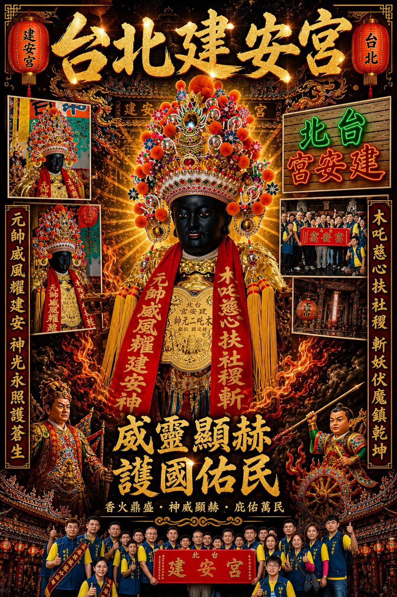
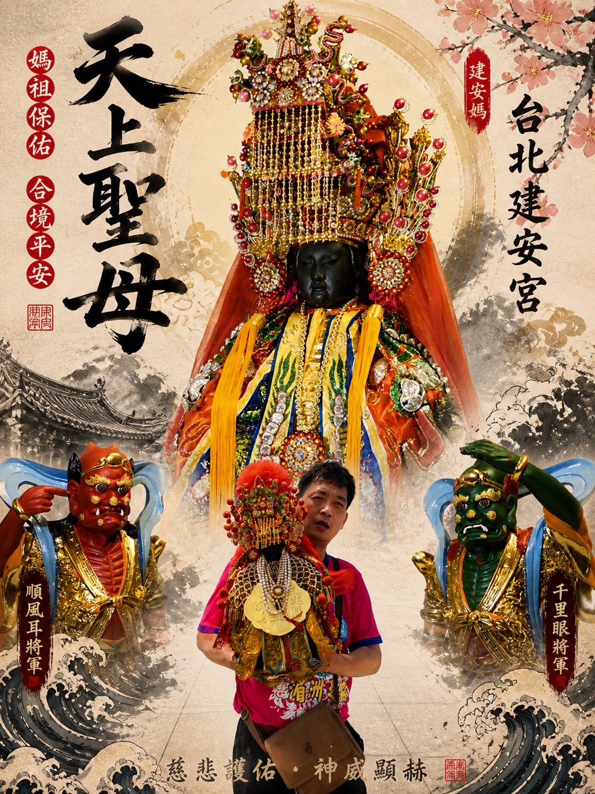

最 新 消 息
廟方公告
本宮近期公告與廟方動態，
詳細請洽報名專線或本宮 FB 粉絲專頁。

台北建安宮管理委員會公告
⛩ 國歷 5 月 23 日 禮拜六
⛩ 農曆 四月初七日
恭 ㊗️ 本宮
千里眼將軍 ／ 順風耳將軍
（聖誕日：四月初七日）
木吒二太子
（聖誕日：四月初八日）
聖 誕 千 秋
🔴
祝壽時間：國歷 5 月 23 日（禮拜六）・ 農曆四月初七日
🔴
祝壽時間：晚上 9:00
🔴
考量到現在士農工商的情況，所以祝壽時間提早
圓 滿 落 幕
2026 ・ 05 ・ 23
農曆四月初七 ・ 禮拜六 ・ 晚上 9:00
千里眼將軍・順風耳將軍・木吒二太子 聖誕千秋
丙午年農曆四月初七，恭祝千里眼將軍、順風耳將軍（聖誕日：四月初七）暨木吒二太子（聖誕日：四月初八）聖誕千秋。考量士農工商作息，祝壽時間訂於晚上 9:00。
查看活動專頁 →

圓 滿 落 幕
2026 ・ 05 ・ 08-09
農曆三月廿三 ・ 禮拜六
天上聖母聖誕祝壽
丙午年祝壽典禮圓滿落幕，
各友宮齊聚 ・ 香塔大德 ・ 21 張影像紀錄。
活動回顧 →

近 期 舉 辦
2026 ・ 04 ・ 25-26
丙午年進香 ・ 開光大典 ・ 恭迎謝范二將軍
丙午年進香 ・ 開光大典 ・ 恭迎謝范二將軍 ・ 回駕萬華繞境
了解詳情 →

已 舉 辦
2026 ・ 02 ・ 28
開燈安斗 ・ 新春補運
農曆正月十二 ・ 燃點平安總斗、
財利、元辰、光明、太歲燈
了解詳情 →
※ 詳細活動資訊請洽：陳炫忖 0981-142-292 / 陳俊宇 0930-311-370